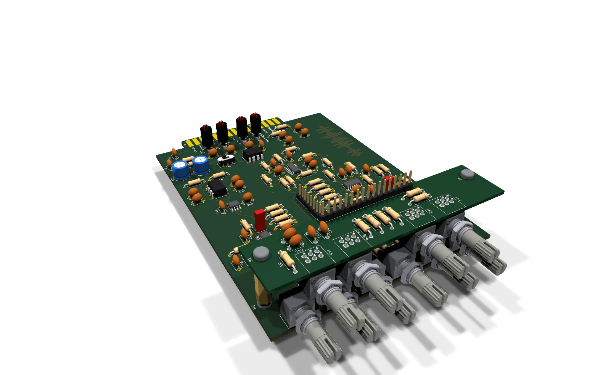
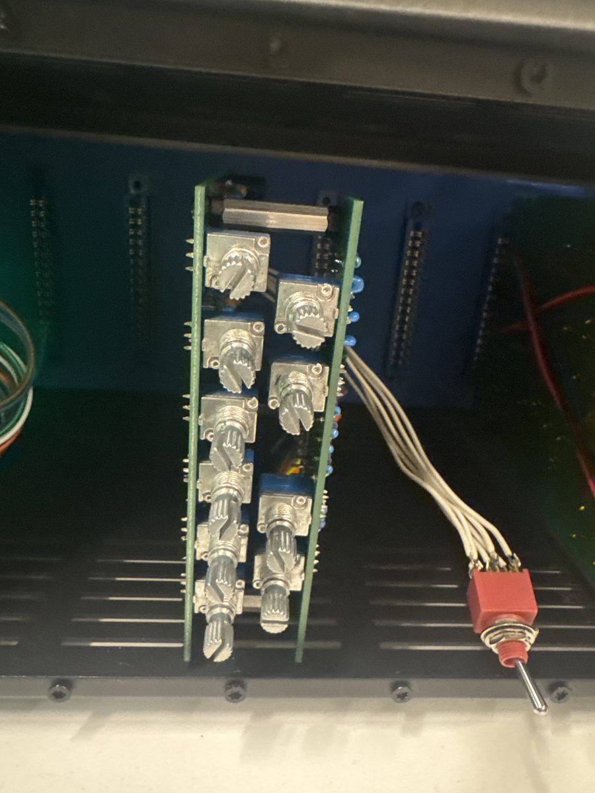
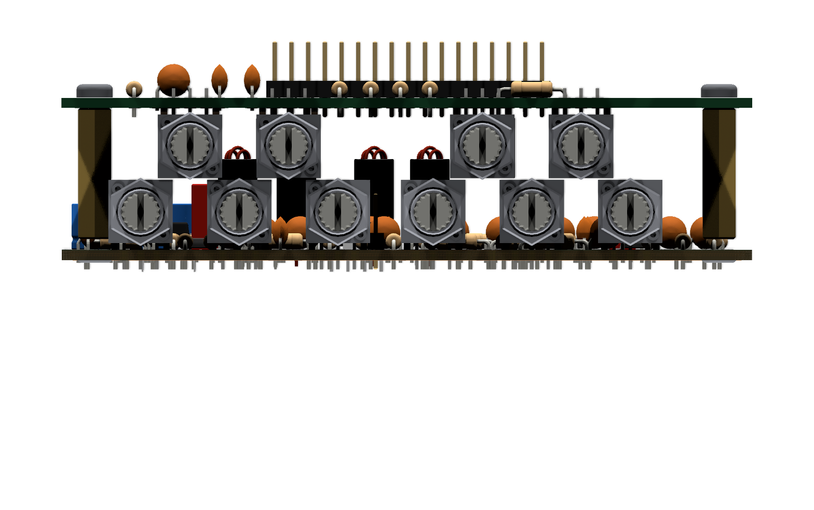
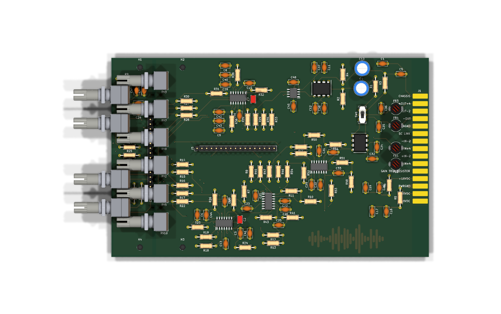

Practical — 06
Board and parts
Two boards, ordered on 8 October and now built: the four-layer main card, and a small top board that carries the four dual frequency pots. They are drawn side by side in one KiCad file and split apart at the front, then stacked on standoffs.


What was ordered
| Main card | Top board | |
|---|---|---|
| Size | 136.85 × 105 mm, plus the 8 mm edge-connector tab | 22.5 × 105 mm |
| Carries | Everything else, including the six single pots along its front edge | RV1, RV4, RV6, RV9 (the frequency pots), the low shelf’s 20 nF caps, and the resistors at the ends of the pot tracks |
| Joined by | J3, 17-pin header | J2, 17-pin header, wired pin for pin to J3 |
| Mounting | H2, H3 (M3) | H1, H4 (M3) |
| Both boards | |
|---|---|
| Layers | Four. Ground pour on In1 on each board; tracks on the front, back and In2 |
| Tracks | 832 segments and 71 vias |
| Parts | 133 footprints. Through-hole except the five op amps (SOIC) |
| Gerbers | 500_Series_EQ.zip in the repository, exported 8 October with KiCad 9.0.7 |
How the two boards fit together
The top board is drawn beside the main card in the KiCad file and split off its front. On the built module it stacks above the main card on two 20 mm M3 standoffs (the ones in the parts list), holes over holes: the top board’s H1 and H4 sit exactly 22.5 mm, its own width, from the main card’s H2 and H3, with its front edge in line with the card’s. That gives the panel two columns of knobs, which is what fixes the earlier layout’s ten shafts crammed into one line:
| Height on the card | Main card column | Top board column |
|---|---|---|
| 64.5 mm | RV3, low shelf level | |
| 72 mm | RV1, low shelf frequency | |
| 79.5 mm | RV7, low-mid width | |
| 87 mm | RV9, low-mid frequency | |
| 94.5 mm | RV8, low-mid boost/cut | |
| 109 mm | RV2, high-mid width | |
| 116.5 mm | RV6, high-mid frequency | |
| 124 mm | RV5, high-mid boost/cut | |
| 131.5 mm | RV4, high shelf frequency | |
| 139 mm | RV10, high shelf level |
Heights are the pot positions measured down the card in the board file, so they read in the board’s own coordinates; the faceplate needs them measured from the panel’s top edge. J2 runs along the top board and J3 across the main card, so the 17 links between them are wires or a ribbon rather than a plug-in header pair.
The photo of the built module shows the top board’s four pots soldered to its
underside, so they hang down between the two boards beside the main card’s six,
while the rest of the top board’s parts face up. Seen from the front, the two rows of
shafts sit 7.5 mm apart in height and, going by the 3D model, about 8.5 mm apart
across the panel. The 3D view
above is built that way by build/eq_stack.py, which cuts the KiCad file in two at
the boards’ shared edge.


What KiCad’s checks say
We ran KiCad 10’s design-rule check on the board as ordered. Nothing in it stopped the module working; three things are worth knowing:
- The card edge pads are wired on one face only. Each J1 pin has a pad on both faces of the card, and the tracks reach one of them. The compressor joins both faces with vias. In a rack whose connector touches both faces of each finger it makes no difference; with a meter, check each used pin reaches the circuit from the slot.
- The top board’s ground has no copper link to the main card’s; it arrives through J2/J3 pin 15, so that wire must be fitted.
- The outline is reported as malformed because the pot footprints draw their own edge marks and the two boards share an edge. The boards were ordered from it as it is; it only matters if the file is edited and re-checked.
Fit notes for the build
- C18 and C20 (100 µF) are on 5 mm disc footprints and the parts list has 8 mm electrolytic cans (Jaycar RE6334): spread their 3.5 mm leads to the 5 mm holes, minding the polarity, which the footprint doesn’t mark.
- C2 and C7 (10 µF) are on a 2.5 mm film footprint and the parts list has bipolar electrolytics (Jaycar RY6810), so their leads need the same treatment.
- IC1, the INA137, has a DIP-8 footprint, and the parts list orders the SOIC version (INA137UA) with a SOIC-to-DIP adapter.
- The pots are Bourns PTD901 (single) and PTD902 (dual) on Alps RK097 footprints. Check one against its footprint before soldering all ten.
The parts list
BOM.xlsx (updated 11 October) has part numbers for everything that was
ordered:
| Parts | Ordered as | Supplier |
|---|---|---|
| Filter capacitors, 100 pF to 10 nF | TDK FG28 C0G, 5% radial, 5 mm pitch | DigiKey |
| Op amps | OPA1644AID × 4, OPA1641AID × 1 | DigiKey |
| Line receiver and driver | INA137UA with a SOIC-to-DIP adapter, DRV134PA | DigiKey |
| Dual pots | Bourns PTD902: 100k log, 100k linear, 10k linear × 2 | DigiKey |
| Single pots | Bourns PTD901 10k linear × 6 | DigiKey |
| Ferrite beads | Laird 28C0236-0JW-10 × 4 | DigiKey |
| Standoffs | M3 × 20 mm aluminium hex × 2 | DigiKey |
| 100 nF and 1 µF | 50 V monolithic ceramic (RC5490, RC5499) | Jaycar |
| 100 µF reservoirs | 35 V low-ESR electrolytic (RE6334) | Jaycar |
| 47 µF and 10 µF coupling | Bipolar electrolytic (RY6820, RY6810) | Jaycar |
| Resistors | 0.5 W metal film, packs of 8 (RR05xx) | Jaycar |
One log pot
One of the two 100k duals is ordered log taper and the other linear; these pages assume linear throughout. On RV1 or RV4, wired as variable resistors, a log track moves where on the knob’s travel each corner frequency falls, not the range itself. Whichever one gets the log pot, its legend marks need to come from turning it, not from the linear figures here.